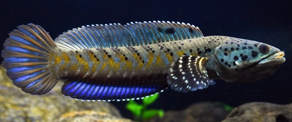
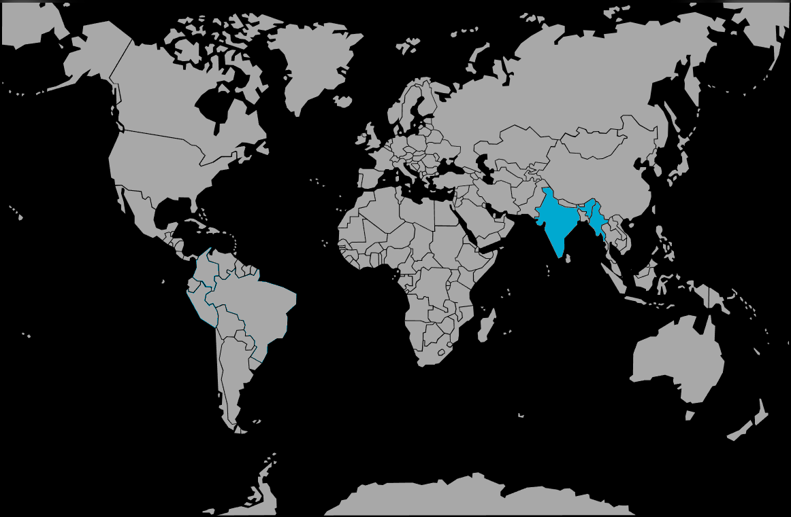

Systématique
- Ordre : Channiformes
- Famille : Channidae
- Genre : Channa
- Espèce : C. pulchra
- Auteur : Hamilton, 1822

Channa pulchra, la tête de serpent colorée ou peacock snakehead, est un petit à moyen channidé d'Asie du Sud très apprécié en aquariophilie pour ses couleurs spectaculaires et son tempérament relativement docile comparé à d'autres Channa.
L'espèce atteint 20 à 25 cm de longueur standard, avec quelques individus dépassant 30 cm en conditions optimales. Le corps est allongé, modérément comprimé latéralement. La coloration de base est exceptionnellement variable selon la population d'origine et l'état de l'animal : dos brunâtre à olive, flancs gris-bleuâtre à bleu métallique brillant, ventre jaunâtre à orangé. La tête affiche des barres noires transversales entre l'œil et l'opercule. Les flancs arborent de nombreuses barres verticales foncées discrètes. La nageoire dorsale est gris-bleu à brun avec marginale noire et liseré clair. La nageoire anale est bleu-gris à bleu vif avec bord noir et liseré blanc ou jaune. Les nageoires pectorales sont jaune-orangé ou transparentes. La nageoire caudale est arrondie, gris-bleu avec motifs marbrés ou barres. Certaines populations (« peacock morph ») arborent des bleus électriques intenses et des marques jaunes dorées spectaculaires.
L'épithète spécifique « pulchra » (magnifique) fait référence aux colorations éclatantes de cette espèce.
Channa pulchra est une espèce semi-agressive à agressive selon les individus, devenant extrêmement territoriale en période de reproduction. L'espèce peut être maintenue seule ou en couple dans un aquarium spacieux. Les couples se forment généralement facilement et demeurent ensemble, mais la femelle peut être persécutée par un mâle trop agressif hors période reproductrice. Certains individus montrent une agressivité inter-spécifique notable envers les poissons de taille inférieure.
L'espèce occupe naturellement le fond et les zones mi-profondes, se tenant cachée sous les roches et plantes. Elle chasse à l'affût, s'approchant lentement des proies avant capture rapide. Elle possède un organe supra-branchial permettant la respiration aérienne et la survie temporaire hors de l'eau en milieu humide. L'espèce est un excellent sauteur; le bac doit être couvert. Elle reste peu active la majorité du temps, s'animant durant l'alimentation ou lors des défenses territoriales.
Mode : ovipare incubateur buccal paternel; particularité rare chez les Channa.
À maturité, les couples se forment et établissent des territoires aménagés soigneusement. Contrairement à la majorité des Channa, C. pulchra est un incubateur buccal paternel : le mâle retient les œufs en permanence dans sa cavité buccale durant l'incubation. La parade nuptiale demeure peu documentée; l'accouplement s'effectue selon l'enlacement typique. Le mâle collecte ensuite les œufs pondus (50 à 150 œufs typiquement) dans sa bouche.
L'incubation buccale dure environ 2–3 semaines à température optimale (26–28°C). Pendant ce temps, le mâle jeûne presque totalement. À éclosion, les alevins restent en bouche du père où ils y reçoivent oxygénation et protection contre la prédation. À libération, les jeunes sont immédiatement autonomes et acceptent nauplii d'artémias fraîchement éclos ou micro-vers. Le couple peut protéger la progéniture durant plusieurs semaines, les alevins demeurant en groupe cohérent autour des parents.
Dimorphisme sexuel : peu marqué. La femelle tend à croître légèrement plus grande que le mâle et affiche généralement un corps plus profond. Le mâle affiche parfois des nageoires dorsale et anale légèrement plus pointues. Aucun caractère externe flagrant ne permet distinction certaine en dehors de la période reproductrice.
Espérance de vie : 10 à 15 ans en captivité en conditions optimales. L'espèce demeure robuste une fois bien acclimatée.
Channa pulchra fréquente naturellement les cours d'eau lents, rivières côtières à débit modéré, marais et zones inondées du bassin du Gange, Brahmaputra et autres fleuves côtiers de l'Inde du sous-continent indien. L'habitat affiche une température climatique tropicale à subtropicale, oscillant entre 18°C en hiver à 28°C en été avec variations saisonnières marquées. L'espèce occupe les zones à proximité de plantes aquatiques denses, racines immergées et débris végétaux. Le substrat est généralement vaseux ou sablonneux.
L'eau affiche une qualité variable : pH neutre à légèrement alcalin (6,5–8), dureté modérée (8–15 °dGH). L'oxygénation peut être faible durant les périodes de stagnation, compensée par l'organe supra-branchial. L'espèce affiche une densité de population modérée, occupant des microhabitats territoriaux distincts. Elle tolère bien les variations saisonnières du climat.
Répartition

Origine naturelle :
- Bassin du Gange, Brahmaputra et rivières côtières assoc iées, Inde du sous-continent.
- Distribut ion large couvrant le Bangladesh, l'Inde du nord-est (Assam, Meghalaya, Tripura, Mizoram), le Bengale-Occidental et possiblement Myanmar.
- Habitats fragmentés dans les zones côtières et régions fluviales intérieures.
Espèce largement disponible en aquariophilie commerciale, importée régulièrement d'Asie du Sud. Populations naturelles menacées par destruction de l'habitat, pollution et surexploitation pour la consommation alimentaire et le commerce. Statut de conservation : peu documenté, populations stables localement.
Paramètres de maintenance
Température : 18 à 28°C; idéalement 22–26°C; l'espèce tolère variations saisonnières.
pH : 6,5 à 8,0, neutre à légèrement alcalin; gamme large tolérée.
GH : 8 à 15 °dGH, eau moyennement dure.
Courant : lent à modéré; filtration douce recommandée.
Volume conseillé : minimum 300–400 L pour un couple ou individu; 120 cm façade minimum. Très planté, nombreuses cachettes (roches, branches, racines), substrat vaseux/sablonneux, écl airage faible, couvercle obligatoire.
Régime alimentaire
Régime : carnivore prédateur strict; se nourrit essentiellement de poissons, crevettes et insectes aquatiques.
En aquarium, accepte proies vivantes (petits poissons, artémias, vers de vase), aliments congelés (vers de sang, moules, chair de poisson, crevettes) mais refuse généralement nourriture sèche ou en poudre. L'espèce chasse à l'affût, approchant lentement avant capture rapide.
Distribution modérée : 1 à 2 fois par semaine en portions adéquates. L'espèce tolère bien les jeûnes prolongés. Teneur en nitrates doit rester inférieure à 50 mg/L. Attention : dévore tout ce qui entre dans sa bouche.